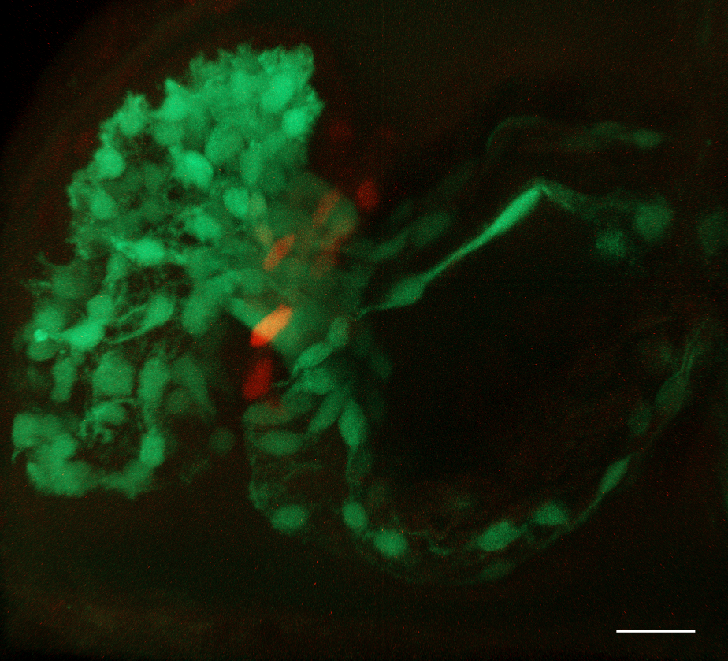
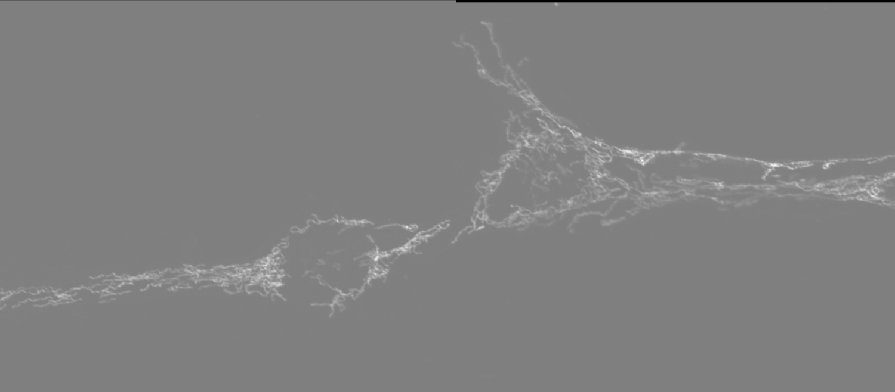
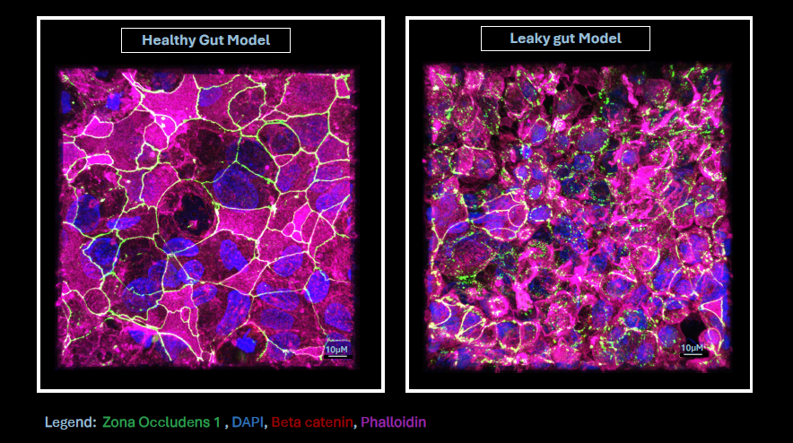

1st
Place
Like glass marbles, these
droplets reveal a hidden mesoscale architecture
Guldur Sushanth (Centre for
Sustainable Materials, School of Materials Science and Engineering, NTU)
This confocal image captures
peptide coacervates formed by liquid–liquid phase separation,
recruiting three fluorescent cargos of distinct molecular sizes:
DroProbe (0.4 kDa, blue), FITC–Insulin (~6 kDa, green), and mCherry (28
kDa, red). The distribution patterns show how small molecules (blue)
diffuse freely and spread uniformly, while larger proteins (green and
red) remain partially excluded, reflecting size-dependent mobility
within the coacervate interior. These spatial organizations point to a
porous, dynamic network, further supported by NMR evidence of
hierarchical peptide assembly. Over time, the droplets fuse, adopting
both spherical and coalesced morphologies.
Image acquired on a Zeiss LSM 780; channels were merged and
brightness/contrast adjusted using FIJI.

2nd
Place
Encircled Fate: Drug Delivery
and Cell Death Within a Vascularized Colorectal Tumor Model
Byun Suyeon
and Andrea Pavesi (LKCMedicine), Austin Seah and Michelle Eio (IMCB,
A*STAR)
Taken on Cell Discoverer 7 using 2
times of 10X magnification, this image displays a colorectal cancer
organoid embedded within the advanced AIM Biotech OrganiX microfluidic
culture platform. The orange central mass represents the CMRA-stained
colorectal cancer spheroid, while the network of green filaments
surrounding it corresponds to GFP-labeled Endothelial Cells,
effectively mimicking blood vessels forming a tumor microenvironment.
Scattered flicks of pink (DRAQ7 stain) highlight dead cells within the
spheroid—a visualization of cell death induced by the chemotherapeutic
drug.
This model captures the intricate tumor–vessel interplay, including
cellular heterogeneity and drug response dynamics, in a setting that
mirrors native tissue architecture and microenvironmental cues. The
result is a powerful, preclinical organ-on-chip system for studying
therapeutic delivery, efficacy, and mechanisms of cell death within
contextually accurate tumor microenvironments.

3rd
Place
Bloom at the Heart’s Core
Yuhong Chen
and Alexander Ludwig
(School of Biological Sciences, NTU)
A 3-day-old zebrafish embryo was
mounted ventral side up, orienting the heart towards the objective for
imaging. Data were acquired on a Zeiss LSM800 – Axio Imager.Z2
microscope using a 40×/0.75 N-Achroplan WD objective with 488 nm and
561 nm laser excitation. Z-stack images were collected and subsequently
3D-rendered in arivis software. Post-processing included background
reduction through fuzziness adjustment.
❮ ❯

Colorectal Cosmos
Austin Seah Wen Kang,
Suyeon Byun and Andrea Pavesi (LKCMedicine) and Michelle Eio (IMCB,
A*STAR)
Taken on Carl Zeiss
LSM800
using a 20X objective, this confocal image captures the periphery of a
Colorectal Cancer Organoid. Distinctive F-actin-rich “zones” (red)
indicate regions of strong cytoskeletal organisation and cell-cell
junctions, reflecting the mechanical tension and polarity
characteristics of epithelial tissues. EpCAM (green) is highly
localised to the outermost layer, highlighting a well-defined
epithelial boundary. With EpCAM’s periphery confinement, it suggests
phenotypic heterogeneity, with outer cells possibly undergoing
epithelial-mesenchymal-transition into a cancer stem-like trait.
Together, this spatial organisation reflects a solid tumour-like
architecture and captures key features of colorectal cancer, including
epithelial polarity, self-renewal potential, and cytoskeletal
remodelling reminiscent of cancer stem cell niches.

Fitting in boxes
Sakcham Bairoliya
(SCELSE)
A 48-hour wastewater biofilm
stained with SYTO9 (green, indicating live cells) and PI (red,
indicating dead cells and extracellular DNA) reveals beautiful
compartmentalization within biofilms. Each compartment is a hot spot
for live biomass, lined by extracellular DNA structures. The image was
acquired on the Zeiss LSM780 inverted confocal microscope with the LD
Plan-Neofluor 40x/0.6 Korr M27 objective and the tiles function.

Mending a Broken Heart:
Vessels of Hope
Leong Kye Siong
(LKCMedicine)
In this confocal image acquired on
LSM800, a cryosection from a pig heart post-myocardial infarction
reveals the regenerative potential of transplanted human cardiovascular
progenitor cells. The xenografted region, identified by human-specific
Ku80 staining (Alexa647; Purple), is densely populated with
cTNT-positive cardiac fibres (Alexa568; Red) and shows a striking
increase in CD31-positive vasculature (Alexa488; Green). DAPI
highlights all cell nuclei. This image visualises how cell
transplantation enhances vascularization within the infarcted
myocardium, offering a glimpse into future therapies for heart repair.

Microgliangelo
Chong Wei Jing
(LKCMedicine)
Fixed BV-2 immortalized microglial
cells immunostained for mitochondria (red), creatine kinase B (green),
F-actin (magenta) and DAPI for nuclei (cyan). Image was taken on the
Carl Zeiss LSM 800 inverted confocal microscope with Plan-Apochromat
63x/1.40 oil objective using Airyscan, taken with 405nm, 488nm, 561nm
and 640nm lasers. Images were taken as two adjacent tiles and processed
with the Airyscan processing tool on ZEN 3.1, which were then stitched
together on Imaris and rotated 90 degrees anti-clockwise. Scale bar
indicates 10um. Image shows two microglia in close contact with each
other with almost touching mitochondria, reminiscent of Michelangelo's
"Creation of Adam".

Seagrass underworld: The
diatom metropolis
Sujatha Srinivas
and Foo Yong Hwee
(SCELSE)
On the surface of a seagrass leaf
lies an unseen city. This scanning electron microscopy (SEM) image
captures the microscopic “metropolis” of diatoms thriving on a leaf of
the spoon seagrass, Halophila ovalis. Each diatom species, with its
ornate silica walls, adding its own architecture to this microscopic
jungle — towers, chains, and lattices intertwining in a dense canopy —
forms an “underworld” community invisible to the naked eye.

Solar Cells, Literally
Samantha McCuskey
(IDMxS) and Zhongxin Chem (NUS)
"Cross-section of a cyanobacterial
biofilm grown on an electrode, forming the active layer of a living
biophotovoltaic device (a system that captures sunlight and channels
microbial photosynthetic electrons into electricity).
Imaging Modality: Scanning electron microscopy (SEM)
Materials: Synechococcus elongatus cyanobacteria on indium tin oxide
(ITO)-coated glass electrodes.
Sample Preparation: Cells were fixed with glutaraldehyde, dehydrated
through an ethanol gradient, dried by CO₂ critical point drying, and
sputter-coated with 4 nm platinum. The electrode was then split in half
with a diamond scribe."

Sticky situation
Sakcham Bairoliya
(SCELSE)
The matrix of a 48 hour wastewater
biofilm growing on a nylon membrane. The proteins (green, FITC),
polysaccahride (red, ConA-Alexa Fluor 647), and DNA (blue, DAPI) form
an intricate network within the biofilm, supporting its growth and
expansion. Image was acquired using a Zeiss LSM 780 inverted confocal
microscope with the LD Plan-Apochromat 40x/1.3 Oil DIC M27 objective
and contrast was adjusted using Zen blue software.

Visualizing Gut Barrier
Integrity Healthy vs Leaky CaCO2 Monolayers
Seetanshu Junnarkar
and Cynthia Whitchurch
(SCELSE)
This image illustrates a healthy
and leaky gut model developed in Professor Cynthia Whitchurch’s lab at
SCELSE, NTU, using CaCO2 cells cultured on Transwell inserts for 21
days. Immunofluorescence staining was performed to visualize tight
junction protein ZO-1 (green), β-catenin (red), F-actin via phalloidin
(magenta), and nuclei (DAPI, blue). The samples were imaged using a
Zeiss LSM 780 confocal microscope with a 63x oil immersion lens, and
the volume view was captured and processed using IMARIS 9.0 software.
In the healthy gut model, ZO-1 is apically localized, while β-catenin
and phalloidin are restricted to the basal region, indicating strong
epithelial polarization. Conversely, the leaky gut model displays
fragmented ZO-1 and disrupted distribution of all markers, signifying
compromised barrier integrity.